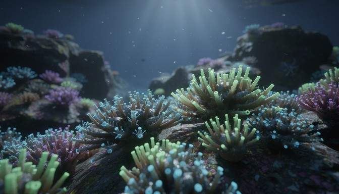
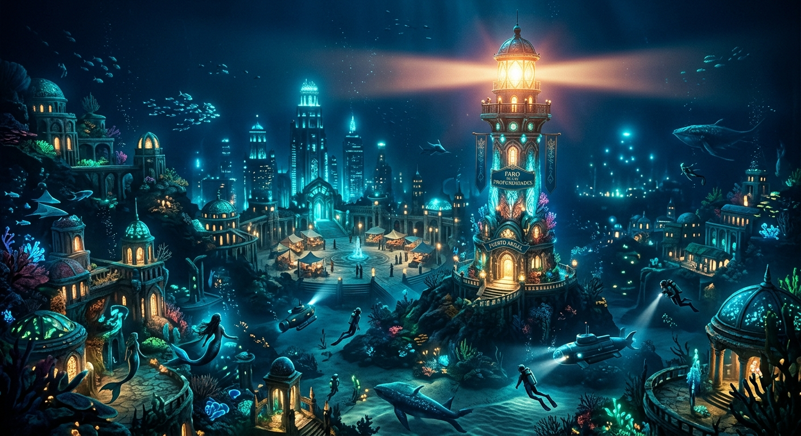
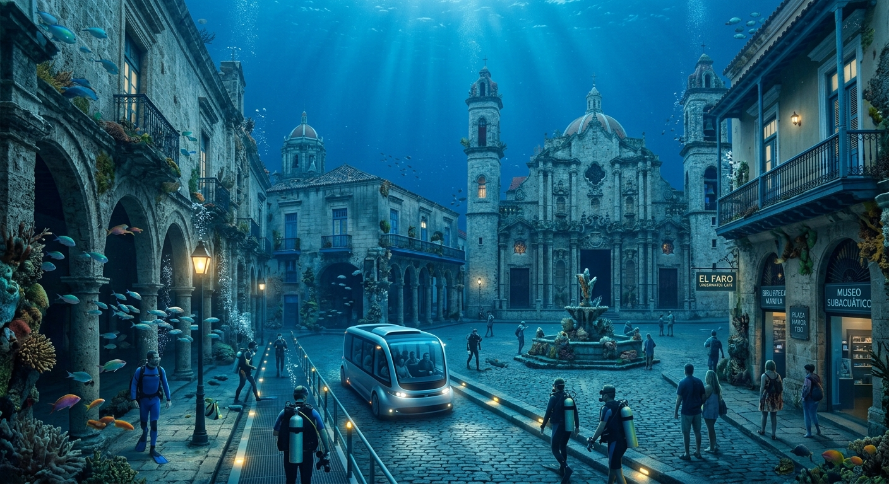

Arrecifes luminosos
Un ecosistema submarino excepcional donde corales, algas y microorganismos generan luz propia mediante bioluminiscencia.

En esta página, podrás encontrar todo lo que necesitas saber antes de hacer tu visita.
Fundada en 1874 por un grupo de exploradores, Puerto Abisal es una ciudad costera construida alrededor de una bahía que ofrece a sus residentes y visitantes una experiencia diferente.
En esta ciudad, que combina avances tecnológicos con la naturaleza, el mar y su ecosistema son muy importantes y cada Abisaleño y Abisaleña lo sabe.

Para mas información, vea : Nosotros y nuestra Historia.
A continuación, podrás tomar referencia de las actividades brindadas por la ciudad y cuales son próximas a vos.
Un ecosistema submarino excepcional donde corales, algas y microorganismos generan luz propia mediante bioluminiscencia.

El Centro Histórico es el Núcleo fundacional de la ciudad. Construido cerca de la bahía, su arquitectura es la original desde su fundación.

Para mas información sobre lugares, vea : Los lugares que nos definen
A continuación podrá ver las fechas importantes mas próximas:
Para ver el calendario completo, vea : ¿Qué hacer en puerto Abisal?